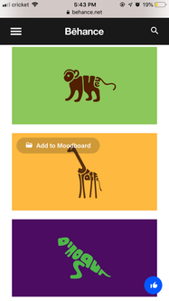

Hick’s Law
Newegg
The Newegg company is properly using the Hick’s Law, which predicts that the time and the effort it takes to make a decision increases with the number of options given.
Even though the company sells many different computer specs, the Hick's Law Priciple is applied through filters, which is great for easier decision-making.
Newegg Website Link
Law of Closure
Behance
Law of Closure is all about “drawing conclusions” and filling in missing pieces. Our mind seek completeness, and when shapes aren’t closed or parts of a picture are missing, our perception fills in the visual gap.
That's why some designers want to leave the drawing conclusions part to the audience, making the content more interesting and engaging. Check a good example from the Behance website where this principle is applied.
Behance Website Link
Whitespace and Clean Design
White space is the portion of a web page that remains “empty”. It’s the space left blank between graphics, columns, images, text, margins and other elements.
As an important element in web design, the space left untouched will smooth things out and transform a page into something elegant. Google properly applied this principle, filling the page with whitespace so we can focus on what matters the most: the search function.